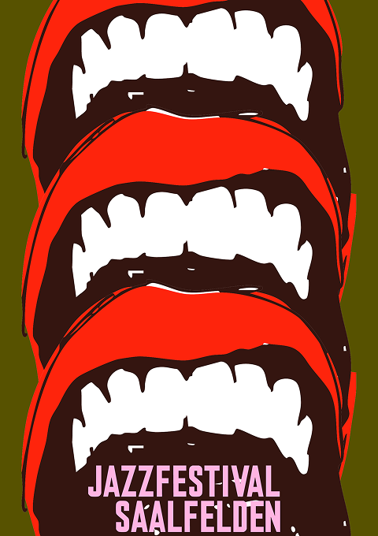
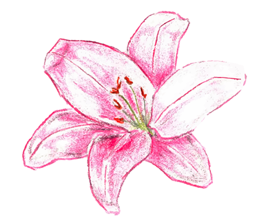
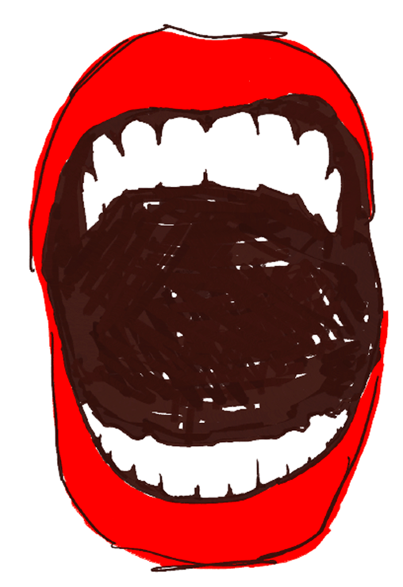

HOPE, PURITY
SMOKY, VELVETY VOCALS
The task
The real life project was to create an identity for the Jazzfestival in Saalfelden.
My interpretation
I decided on these two visuals, which are combined. I wanted to
create a contrast or pick up on the aspect of call and response in jazz by designing the flowers in an analogue style and the mouth in a more digital style, so that they are in dialogue with each other. They should also be spontaneous and improvise, as this is also typical of jazz.
